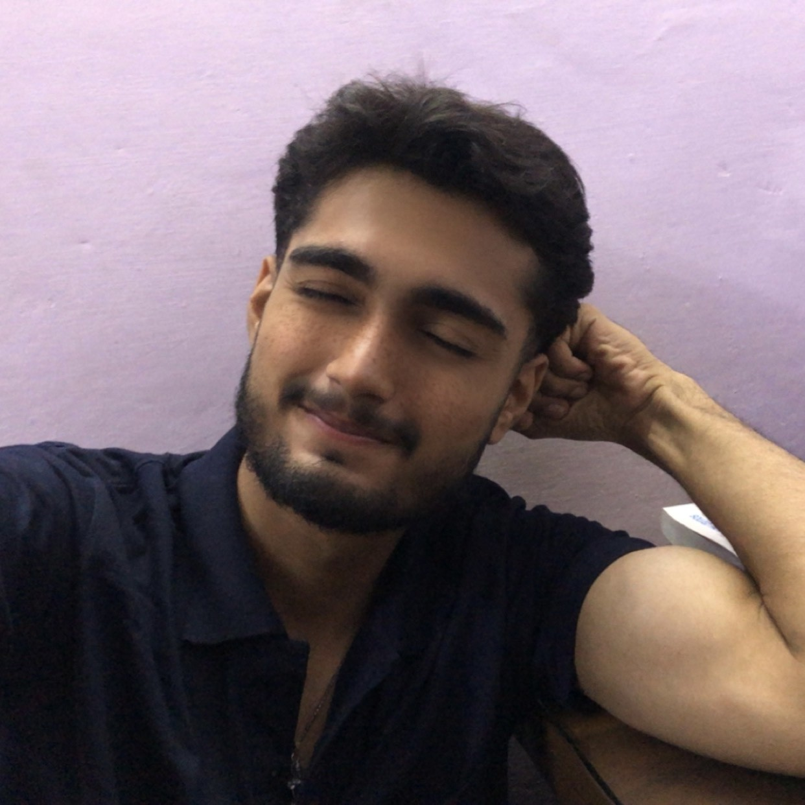

LINKED.IN
Aspiring Data Analyst | Excel, SQL & Python Enthusiast | Learning by Doing
| Video Editing • Photo Editing • Photography • Computer Proficiency |

I'm a creative and tech-savvy individual with a strong interest in video editing, photo editing, and photography. I enjoy telling stories through visuals and have experience working with tools like CapCut, Lightroom, and other mobile/PC editing apps. I'm also comfortable with computers — including MS Office (Word, Excel, PowerPoint), internet use, typing, and basic troubleshooting. I believe in learning by doing, and I'm always exploring new skills to improve myself. Whether it's capturing a perfect shot or editing a video with the right flow, I put creativity and effort into every task. I'm currently looking for opportunities where I can grow, learn, and contribute my creative and technical skills.
Video Editing (CapCut, Filmora, etc.)
Photo Editing (Snapseed, Lightroom)
Photography (Basic composition, DSLR & mobile photography)
Computer Knowledge (MS Office, Internet, typing, basic troubleshooting)